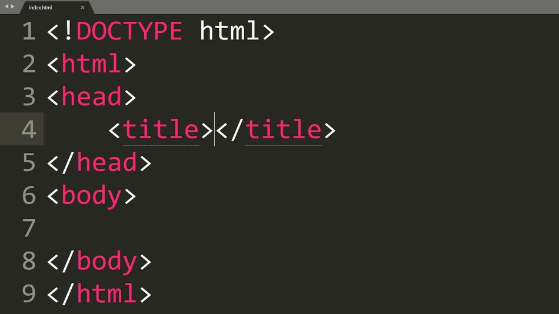
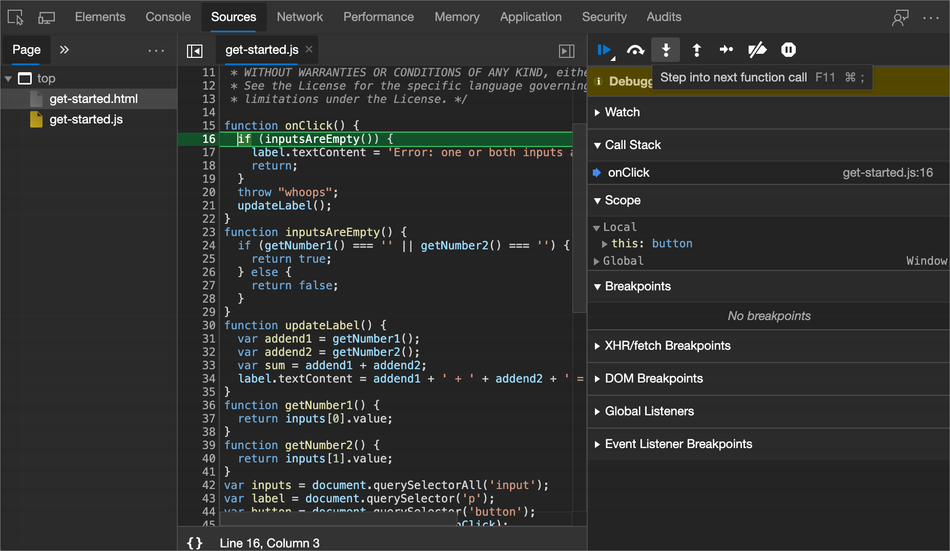

Frontend vs backend: различия и особенности разработки
Frontend- и backend-разработка тесно связаны между собой и не могут существовать по отдельности. Однако это совершенно разные направления программирования как по типу выполняемых задач, так и по общему предназначению.
В этом материале речь пойдет о различиях этих направлений, их особенностях и требованиям к разработчикам.
Понятие frontend-разработки
Под понятием frontend подразумевается разработка видимого для пользователя интерфейса и всех функций, с которыми он может взаимодействовать. По сути, когда вы переходите на любой сайт, то видите там кнопки, текст, различную анимацию и другие составляющие – все это реализовано при помощи фронтенда. Для создания этих элементов используются три разных языка – HTML, CSS и JavaScript.
Посмотрите на структуру страницы прямо сейчас – для этого на любом сайте вызовите консоль разработчика, нажав клавишу F12. Вы увидите набор строчек кода, которые и формируют внешний вид данной страницы.
Код страницы используется для описания всего видимого: шрифтов, картинок, размеров элементов, анимаций, всплывающих окон, звуков при нажатиях и всего другого, с чем может взаимодействовать пользователь. За каждую из частей интерфейса отвечают разные языки. Как раз те, что и должен выучить frontend-разработчик.
HTML
Основной инструмент в этой сфере – язык гипертекстовой разметки HTML. Он нужен в основном для разметки документа, то есть страницы в браузере. С помощью него разработчик создает структуру, добавляет заголовки, списки и осуществляет другое форматирование контента.
CSS
Если разработчик учит HTML, он обязательно осваивает и CSS (Cascading Style Sheets). Этот язык отвечает за внешний вид страницы. С его помощью вы работаете с цветами, шрифтами и расположением различных блоков. Если простыми словами, то CSS используется для красивого оформления страницы и настройки ее внешнего вида уже после того, как основная структура была написана при помощи HTML.
JavaScript
С помощью JavaScript реализуется выполнение различных действий на странице, то есть добавляется анимация и отклик на запросы пользователя. Например, страница реагирует на перемещение курсора и клики мышкой, изменяя поведение элементов в соответствии с действиями пользователя. Благодаря JS осуществляется отправка и получение данных с сервера без необходимости перезагрузки страницы, а значит, некоторые задачи реализуются более просто, например, когда речь идет об отправке и получении сообщений.
Фронтенд – это сфера, в которой разработчик создает видимые для пользователя элементы интерфейса и все функции для взаимодействия с сайтами и приложениями. Все это тесно связывается с бэкендом, о котором пойдет речь далее.
Backend-разработка
Считается, что backend-разработка сложнее фронтенда, поскольку программист обходится без видимых элементов интерфейса, ведь он работает над логикой сайта. Пользователь не видит эту сферу, потому что все действия осуществляются вне его браузера и даже компьютера. Как только поступает запрос (например, когда вы нажали Enter при запросе в поисковике), сигнал сразу же отправляется на сервер, где и обрабатывается для дальнейшего вывода информации на экран. Это и есть логика сайта, заключающаяся в трех простых шагах:
- отправка информации от пользователя,
- ее обработка на сервере,
- получение информации и форматирование кода в читаемый вид.
Используемые языки программирования в бэкенде
Если в случае с фронтендом нет никакой вариативности, так как разработчики всегда используют описанные языки программирования для достижения желаемого результата, то вот с backend все обстоит немного иначе. Выбор языка и инструментов зависит от сервера. Зачастую ограничений нет, и разработчик выбирает практически любой универсальный ЯП.К таким относятся:
- Java;
- PHP;
- Python;
- Ruby и другие.
В большинстве случаев бэкенд-разработчику понадобятся знания по управлению базами данных, которых тоже существует немало. Популярнее всего MySQL, но есть еще и PostgreSQL, SQLite, MongoDB.От выбранной системы управления базами данных меняются и обязанности разработчика, поскольку действия выполняются разными путями.